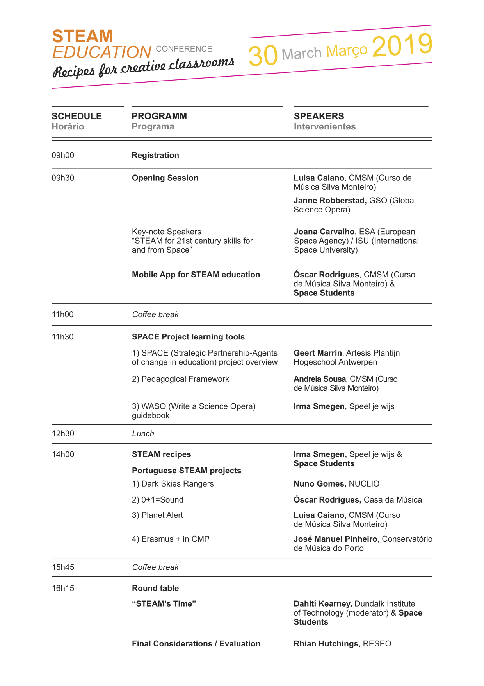

Steam Education - Recipes for Creative Classrooms
STEAM is an innovative method of teaching and should be implemented across Europe. More and more institutions should work together to share ideas and develop further projects.
PARTICIPANT AT STEAM EDUCATION CONFERENCE, PORTO 2019
As the final event of the Erasmus Plus SPACE project, Curso de Musica Silva Monteiro hosted a one day symposium in Porto to explore the resources and learning created through the project by the partners.
The event took place on Saturday 30th March 2019
The day explored how to use creative techniques and arts to deliver science outcomes in the classroom. Content included a keynote speakers from NUCLIO and Global Science Opera, STEAM recipes, presentations of the resources created through the SPACE project, presentations of other portuguese STEAM projects, and a round table discussion.
You can find content from the symposium here, including a video of the day in action and key presentations.

